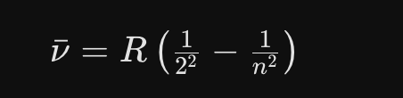

Willkommen
Künstliche Intelligenz für den Büroalltag · ARS Akademie · Online / Zoom · Mittwoch, 21.10.2026 · Trainer: Jakub Popluhar, M.Ed.
Schön, dass Sie da sind. Ein Tag, zwei Kurse, dieselbe Gruppe. Am Vormittag (09:00 bis 13:00) lernen Sie, wie Sie einer KI verlässlich brauchbare Antworten entlocken: Der erste Schritt zum Prompt Profi. Am Nachmittag (14:00 bis 18:00) bauen Sie sich Ihren dauerhaften KI-Assistenten: Mit KI-Assistenten die Produktivität steigern.
So läuft der Tag online
- Zwei Fenster nebeneinander. Links Zoom, rechts der Browser mit zwei Tabs: dieses Übungsblatt und Ihr KI-Werkzeug. Den Handgriff dafür zeige ich gleich (Abschnitt „Den Bildschirm teilen“). Mit zweitem Bildschirm geht es bequemer.
- Kamera an, wenn es für Sie geht. Ich sehe dann, wo es hakt, und Sie bekommen schneller Hilfe.
- Fragen sofort. Mikrofon an und einfach fragen, oder in den Zoom-Chat schreiben, ich lese mit. Keine Frage ist zu klein.
- Kopfhörer oder Headset sind besser als Lautsprecher: Wenn Ihr Laptop später Audio abspielt, soll es nicht ins Mikrofon zurückkommen.
Wohin mit Ihren Ergebnissen?
| Was | Wohin |
|---|---|
| „Fertig“ melden | Zoom-Chat. Am Ende jeder Übung steht das Stichwort, zum Beispiel „Namen fertig“. |
| Ein Ergebnis zeigen | Ein Satz in den Zoom-Chat. Wenn ich Sie bitte, teilen Sie kurz Ihren Bildschirm. |
| KI-Check, Feedback, Quiz | Formulare, direkt in dieser Seite. Im Formular immer unten auf „Absenden“ klicken. Feedback am Vormittag und am Nachmittag ist Pflicht und dauert zwei Minuten. |
| Ihre Texte aus den Übungen | Bleiben bei Ihnen. Speichern Sie sie in einer Notiz oder Textdatei, Sie brauchen sie am Nachmittag wieder. |
So nutzen Sie diese Seite
- Lassen Sie die Seite den ganzen Tag offen, auch in der Mittagspause.
- Tippen Sie einen Prompt an, dann ist er kopiert. Einfügen im KI-Werkzeug mit Strg+V (Mac: Cmd+V).
- Links sehen Sie alle Abschnitte des Tages, unten rechts geht es mit „Erledigt, weiter“ zum nächsten. Am Handy oder bei schmalem Fenster öffnen Sie die Übersicht oben mit „☰ Inhalt“.
- Sind Sie früher fertig, machen Sie bei „Wenn Sie früher fertig sind“ weiter. Werden Sie nicht fertig, ist das in Ordnung: wir gehen gemeinsam weiter.
Der Tag
| Zeit | Vormittag: Die Psychologie der Maschine |
|---|---|
| 09:00 | Intro und Mindset |
| 09:30 | Das Gehirn der KI |
| 10:30 | Kaffeepause |
| 10:45 | Deep Dive Prompting |
| 13:00 | Ende Vormittag, Mittagspause |
| Zeit | Nachmittag: Das digitale Team und Strategie |
| 14:00 | KI-Werkstatt: Projekt anlegen |
| 15:00 | Compliance |
| 15:45 | Kaffeepause |
| 16:00 | KI-Werkstatt |
| 18:00 | Finale und Transfer, Ende |
Als Erstes kommt Ihr KI-Check. Weiter geht es unten rechts mit „Erledigt, weiter“.
Ihr KI-Check
Kein Test, eine Standortbestimmung. Es gibt keine falschen Antworten. Dauer: 5 Minuten.
Wählen Sie im Formular jetzt „Vormittag“. Am Ende des Tages füllen Sie denselben Fragebogen noch einmal aus und wählen dann „Nachmittag“. So sehen wir, was Sie dazugelernt haben.
Nicht vergessen: unten im Formular auf „Absenden“ klicken.
Formular lädt nicht? Hier in einem neuen Fenster öffnen.
Den Bildschirm teilen
Der wichtigste Handgriff des Tages, er dauert zehn Sekunden. Links Zoom, rechts der Browser mit zwei Tabs: Tab 1 ist dieses Übungsblatt, Tab 2 Ihr KI-Werkzeug.
Mac
Das Fenster, das nach links soll (Zoom), anklicken. Den grünen Knopf links oben im Fenster gedrückt halten, nicht klicken. Es erscheinen zwei Hälften. Die linke Hälfte anklicken, dann aus der Liste rechts den Browser wählen.
Windows
Zoom anklicken, dann Windows-Taste + Pfeil links. Zoom springt in die linke Hälfte, Windows zeigt die übrigen Fenster zur Auswahl für rechts. Den Browser anklicken.
Zwischen den Tabs wechseln
Rechts im Browser liegen zwei Tabs nebeneinander: dieses Übungsblatt und Ihr KI-Werkzeug. Ein Klick auf den Tab genügt. Per Tastatur: Strg+Tab (Mac: control+Tab) springt zum nächsten Tab.
Wenn gar nichts klappt: Fenster mit der Maus an den linken oder rechten Bildschirmrand ziehen, bis eine Hälfte aufleuchtet, loslassen. Mit zweitem Bildschirm: Zoom auf den einen, den Browser auf den anderen.
Wer heute nicht teilt, klickt den ganzen Tag zwischen Zoom und Browser hin und her und verliert bei jedem Wechsel den Faden.
Ihr KI-Werkzeug öffnen
Öffnen Sie jetzt in Tab 2 das Werkzeug, das Sie auch im Büro nutzen dürfen. Für diesen Tag genügen die kostenlosen Versionen. Alle Prompts hier funktionieren in jedem der vier.
Google-Zweitkonto
Gemini und NotebookLM (am Nachmittag) brauchen ein Google-Konto. Haben Sie noch keines für den Tag: jetzt anlegen, es dauert drei Minuten. Am besten ein kostenloses Zweitkonto nur zum Ausprobieren, nicht die Firmenadresse und nicht Ihr privates Postfach. Name frei wählbar, keine Telefonnummer nötig.
Wenn etwas auf Ihrem Firmenlaptop gesperrt ist
| Problem | Ausweg |
|---|---|
| ChatGPT oder Claude ist gesperrt | Nehmen Sie Copilot mit Ihrem Arbeitskonto (m365.cloud.microsoft, dort „Chat“). Alle Prompts dieses Tages laufen unverändert. |
| Copilot ist gesperrt | Nehmen Sie eines der anderen drei, sofern Ihre Firma es erlaubt. |
| Gemini oder NotebookLM ist gesperrt | Bei der Übung zum EU AI Act (Nachmittag) steht ein Ausweichweg. Alles andere läuft in jedem Chat. |
| Datei-Upload geht nicht | Kopieren Sie den Text direkt in den Chat. Bei langen Texten in Teilen. |
| Nutzungslimit erreicht („später wieder“) | Wechseln Sie auf ein zweites Werkzeug und halten Sie Chats kurz: Lange Chats verbrauchen mehr Kontingent. Sagen Sie mir im Zoom-Chat Bescheid. |
Eine Sperre Ihrer Firma umgehen Sie nicht. Ein privates Gerät oder ein Zweitkonto ist nur für Übungen mit erfundenen oder abstrahierten Daten gedacht, nie für Firmendokumente.
Die Namensliste
Derselbe Prompt bei allen, drei Nachbarländer, und ein Blick auf die Listen der anderen. Achten Sie nicht darauf, ob die Namen stimmen, sondern welche kommen.
Schritt 1: Runde 1, Österreich (neuer Chat)
Schritt 2: Mit der Gruppe vergleichen
Schreiben Sie Ihre 10 Nachnamen in den Zoom-Chat. Schätzen Sie vorher: Wie viele davon tauchen auch bei anderen auf?
Meine Schätzung: ________ von 10 · Tatsächlich: ________ von 10
Schritt 3: Runde 2 und 3, im selben Chat weiterschreiben
Schicken Sie die beiden Nachrichten nacheinander. Warten Sie jedes Mal die Antwort ab.
Drei Nachbarländer, zwei davon mit derselben Sprache. Trotzdem drei verschiedene Listen.
Schritt 4: Vergleichen
- Was hat sich zwischen den drei Listen verändert, und was ist gleich geblieben?
- Denken Sie an Ihre eigene Abteilung. Wie viele der Namen, die dort wirklich stehen, hätte die KI in ihre Österreich-Liste geschrieben?
- Schreiben Sie eine Zeile auf: Wo in Ihrer Arbeit liefert Ihnen die KI das Häufigste, ohne dass Sie je erfahren, was sie weggelassen hat?
Wenn Sie früher fertig sind
Auflösung (erst aufklappen, wenn Sie verglichen haben)
Die KI hat sich diese Namen nicht ausgedacht. Sie hat ausgerechnet, welche Namen am häufigsten vorkommen. Deshalb steht in den Listen der anderen fast dasselbe.
Werkzeug gesperrt? Nehmen Sie Copilot oder ein anderes aus „Ihr KI-Werkzeug öffnen“. Der Prompt funktioniert überall.
So sieht es aus, wenn es geklappt hat: Ihre Liste und die der anderen überschneiden sich deutlich. Zoom-Chat: „Namen fertig“.
Training ausschalten, Gedächtnis prüfen
Im Gratiskonto ist das Training fast überall vorausgewählt. Drei Klicks, einmal im Leben. Der Schalter wirkt nur nach vorne: Was Sie schon gesendet haben, ist damit nicht zurückgeholt.
| Werkzeug | Training ausschalten |
|---|---|
| ChatGPT | Standard: AN. Einstellungen → Data Controls → „Improve the model for everyone“ aus. Auch Ihre Custom Instructions fließen ins Training, solange der Schalter an ist. |
| Claude | Selbst ansehen. Einstellungen → Datenschutz → Modelle verbessern („Helfen Sie uns, unsere KI-Modelle zu verbessern“). |
| Gemini | Standard: AN. Einstellungen & Hilfe → Aktivität → „Aktivitäten speichern“ aus. Auch danach werden Chats noch 72 Stunden gespeichert. |
| Copilot | Standard: AN. Profil → Datenschutz → „Schulungen zu Unterhaltungsaktivitäten“ aus. Gilt nur angemeldet. Mit Arbeitskonto wird ohnehin nicht trainiert. |
Was sich die KI über Sie merkt
Gedächtnis ist etwas anderes als Chatverlauf, und es ist nicht überall dasselbe.
| Werkzeug | Gedächtnis |
|---|---|
| Claude | Im Gratiskonto AN. Einstellungen → Memory → Topics. Einzeln lesen, ändern, löschen. |
| ChatGPT | Je nach Plan. Einstellungen → Personalization → Memory. Gespeicherte Fakten und der Blick in frühere Chats sind getrennt abschaltbar. |
| Gemini | Braucht „Aktivitäten speichern“. Einstellungen & Hilfe → Persönlicher Kontext. Löschen geht nur über die zugrundeliegenden Chats. |
Fragen Sie Ihre KI einmal: „Was weißt du über mich?“
Die Bezeichnungen ändern sich alle paar Wochen. Finden Sie einen Schalter nicht, fragen Sie im Zoom-Chat.
Zwei Regler: Modell und Denkstufe
Welches Modell antwortet, und wie lange es nachdenkt. Das sind zwei verschiedene Einstellungen.
| Regler | Was er tut |
|---|---|
| 1: das Modell | Das Fahrzeug. Größer ist stärker, aber langsamer. Im Gratiskonto meist schon festgelegt. |
| 2: die Denkstufe | Der Gang. Höher heißt gründlicher, braucht Zeit und Kontingent. „Denk gründlicher nach“ im Prompt schaltet nichts um. |
| Werkzeug | Wo Sie es finden |
|---|---|
| ChatGPT | Gratis: Knopf „Nachdenken“. Bezahlt: Schieberegler von Instant bis Pro. |
| Claude | Menü neben dem Senden-Knopf: Modell und „Aufwand“, Voreinstellung Mittel. |
| Gemini | Modell wählen, „Denken“ getrennt davon. |
| Copilot | „Auto“ entscheidet für Sie. |
Mit der Voreinstellung starten. Erst bei komplexen Aufgaben hochschalten.
Prompten: Homeoffice-Regelung
Derselbe Auftrag, erst ohne, dann mit Kontext. Danach lassen Sie die KI den Inhalt in verschiedenen Stilen schreiben.
Schritt 1: Der einfache Prompt (neuer Chat)
Lesen Sie die Antwort an und posten Sie den ersten Satz in den Zoom-Chat.
Schritt 2: Was die KI nicht weiß (aufklappen)
1. Platzproblem: Wir haben Schreibtische abgebaut, um Miete zu sparen. Wenn 100% gleichzeitig kommen, gibt es nicht genug Arbeitsplätze.
2. Infrastruktur: Meetingräume, Drucker, WLAN: alles auf reduzierten Betrieb ausgelegt. Mehr Leute überlasten alles sofort.
3. Logistik: Pendlerströme, Parkplatzknappheit, Kantinenkapazität. Sicherheits- und Reinigungsaufwand steigt.
4. Finanzielle Risiken: Kurzfristig neue Arbeitsplätze schaffen: Möbel, Hardware, Lizenzen, eventuell Mietflächen erweitern.
5. Akzeptanz: Mitarbeiter sind genervt: "Schon wieder neue Regeln, zuerst flexible Arbeitsmodelle, jetzt zurück ins Büro?" Gefühl der Fremdbestimmung. Misstrauen gegenüber dem Sinn.
Frage an Sie: Merken Sie den Unterschied? Die KI wusste nichts davon. Sie hat geraten. Deshalb war das Ergebnis generisch.
Schritt 3: Jetzt mit Kontext probieren (aufklappen)
Probieren Sie den gleichen Prompt noch einmal, aber geben Sie der KI den Kontext mit. Hier der vollständige Prompt zum Kopieren:
Vergleichen Sie: Gleiche KI, gleiche Frage, aber mit Kontext. Völlig anderes Ergebnis. Posten Sie wieder den ersten Satz in den Zoom-Chat.
Schritt 4: Die Stil-Maschine, in einer Nachricht (aufklappen)
Eine einzige Nachricht, drei Stile auf einmal:
Erkenntnis: Die KI imitiert Muster, sie "denkt" nicht. Und: Tonalität im Prompt steuert alles.
Die ersten zwei sind keine Spielerei: Beim Rap merken Sie, wo die KI dünn wird. Beim dritten haben Sie etwas in der Hand, das Sie morgen wirklich verschicken könnten.
Wenn Sie früher fertig sind
Werkzeug gesperrt? Nehmen Sie Copilot oder ein anderes aus „Ihr KI-Werkzeug öffnen“. Die Prompts sind für jedes Werkzeug geschrieben.
So sieht es aus, wenn es geklappt hat: Der Entwurf mit Kontext nennt die Platzprobleme und die Skepsis, der ohne Kontext nicht. Zoom-Chat: „Homeoffice fertig“.
Die 3-Sekunden-Regel und welches Konto
Ab hier arbeiten Sie mit Material aus Ihrer eigenen Firma. Drei Sekunden, bevor Sie Enter drücken:
- Namen raus. Aus Frau Gruber wird „eine Kollegin aus dem Einkauf“.
- Zahlen raus. Aus 47.500 Euro wird „ein mittlerer fünfstelliger Betrag“.
- Strategien und Interna raus. Abstrahieren, nicht abschreiben.
Und eine Frage dazu: Wem gehört das Konto?
| Konto | Was hinein darf |
|---|---|
| Firmenkonto | Firmendokumente, soweit Ihre Firma es freigibt. |
| Privates Abo, auch Plus und Pro | Keine Angebote, Verträge, Manuskripte oder Kundendaten. |
| Gratiskonto oder Zweitkonto | Zum Üben und für Öffentliches. Nur abstrahierte Beispiele, Training ausschalten. |
Die Faustregel: Behandeln Sie die KI wie einen Praktikanten, der im öffentlichen Bus sitzt. Er ist hilfreich, aber er sitzt nicht allein da. Firmendokumente gehören ins Firmenkonto, nie ins private Abo.
CITE(R) Framework: Jetzt sind Sie dran
Sie planen eine Reise. Kurze Nachrichten, jede legt eine Schicht drauf. Mittendrin ändert sich etwas, und danach ändert es sich zurück. Um die Reise geht es nicht.
| Baustein | Frage |
|---|---|
| C = Context | Was ist die Ausgangssituation? |
| I = Intent | Was genau will ich erreichen? |
| T = Task | Was soll die KI machen? |
| E = Execution | Wie soll sie es machen? (Format, Ton, Länge) |
| R = Reality | Stimmt das Ergebnis? Was muss ich prüfen? |
Schritt 1 (T = Task): Nur die Aufgabe (neuer Chat)
Eine Zeile, sonst nichts. Schauen Sie sich an, was zurückkommt.
Schritt 2 (C = Context): Wer fährt mit
Dazwischen: Es ändert sich etwas
Warten Sie die Antwort ab und lesen Sie sie kurz an.
Dazwischen: Stopp, nicht weitertippen
Die Kinder kommen doch nicht mit. Es bleibt bei den 4 Erwachsenen. Was machen Sie jetzt? Überlegen Sie kurz, bevor Sie aufklappen.
Erst überlegen, dann hier aufklappen
Schauen Sie nach, was übrig geblieben ist: Ihr Reiseziel steht noch, und die vier Erwachsenen sind zurück.
Gelöscht ist nichts. Die Nachricht steht weiter da und die KI liest sie mit. Sie haben ihr nur gesagt, wie sie damit umgehen soll.
Schritt 3 (I = Intent): Das Ziel nachschieben
Neue Nachricht, im selben Chat. Nicht alles noch einmal schreiben.
Schritt 4 (E = Execution): Die Ausführung nachschieben
Schritt 5 (R = Reality): Die KI prüft sich selbst
Sie haben nichts wiederholt. Ein paar kurze Nachrichten, und am Ende steht ein vollständiger Auftrag. Den Kontext trägt das Gespräch, nicht die einzelne Nachricht.
Wenn Sie früher fertig sind
Derselbe Chat, derselbe Plan, ein völlig anderer Text. Den Inhalt bestimmt das Gespräch, die Wirkung bestimmt der letzte Auftrag.
Zum Schluss: Eine Zeile aufschreiben
Wann haben Sie zuletzt einen Chat weggeworfen und von vorne angefangen, weil etwas schiefgelaufen war? Was hätten Sie stattdessen sagen können?
Werkzeug gesperrt? Copilot oder ein anderes Werkzeug aus der Liste: gleiche Prompts, gleiches Ergebnis.
So sieht es aus, wenn es geklappt hat: ein Plan in Ihrem Format, mit markierten Stellen zum Nachprüfen. Zoom-Chat: „Reise fertig“.
Ihre KI-Wissensbasis aufbauen
Erstellen Sie zwei Dokumente, die Ihre KI ab sofort schlauer machen. Sie verwenden sie am Nachmittag wieder.
Zwei Teile, beide gehören zusammen. 1a ist Ihre Firma, die lässt die KI selbst recherchieren, Sie kopieren nur den Prompt. 1b ist Ihre Rolle, die beschreiben Sie selbst. Speichern Sie beide Dokumente am besten als Textdatei (.txt) oder in einer Notiz auf Ihrem Rechner. Eine Textdatei liest jede KI am sichersten, mehr dazu am Nachmittag. Sind Kolleginnen oder Kollegen aus Ihrer Firma dabei: kurz im Zoom-Chat absprechen, aber jede Person legt ihre eigenen Dokumente an.
1a: Meine Firma, die KI recherchiert und Sie kopieren nur
Sie müssen nichts über Ihre Firma zusammenschreiben. Die KI sucht selbst nach. Sie setzen den Firmennamen ein und schicken ab.
Schritt 1: Kopieren, Firmennamen einsetzen, abschicken
Ihr Werkzeug braucht dafür Internetzugang. Bei ChatGPT, Copilot, Gemini und Claude ist der in den kostenlosen Versionen dabei.
Keine Websuche möglich? Beschreiben Sie Ihre Firma selbst in fünf Stichworten (Branche, Größe, Produkte, Kunden, Standorte) und ersetzen Sie den ersten Absatz durch: „Hier sind meine Stichworte zu meiner Firma: [Stichworte].“ Der Rest bleibt gleich.
Schritte 2-4 (erst aufklappen, wenn Schritt 1 fertig ist)
Schritt 2: Zwei Angaben prüfen
Nehmen Sie sich zwei Angaben heraus, die Sie sicher beurteilen können, zum Beispiel Mitarbeiterzahl, Gründungsjahr oder Standorte. Stimmt etwas nicht, korrigieren Sie es:
Das ist kein Extraschritt, das ist die Übung. Eine KI erfindet Zahlen über Ihre echte Firma genauso bereitwillig wie über alles andere. Sie merken es nur, wenn Sie hinschauen.
Schritt 3: Verfeinern
Schritt 4: Speichern
Kopieren Sie das fertige Dokument und speichern Sie es als Textdatei oder in einer Notiz.
1b: Meine Rolle, die schreiben Sie selbst
Ihre Firma findet die KI im Netz. Ihre Rolle nicht. Was Sie tatsächlich den ganzen Tag tun, steht nirgends geschrieben, deshalb machen Sie diesen Teil selbst. Die KI stellt Ihnen dazu Fragen.
Tipp: Diktieren statt tippen! Die KI versteht Ihre Antworten auch gesprochen. Das Mikrofon-Symbol finden Sie in der Eingabezeile. Schalten Sie in Zoom das Mikrofon stumm, solange Sie diktieren.
Schritt 1: Kopieren und abschicken
Beantworten Sie die Fragen der KI. Warten Sie danach auf die nächste Anweisung.
Schritte 2-4 (erst aufklappen, wenn Schritt 1 fertig ist)
Schritt 2: Dokument erstellen lassen
Schritt 3: Verfeinern
Schritt 4: Speichern
Kopieren Sie das fertige Dokument und speichern Sie es.
Bei längeren Aufgaben verliert die KI den roten Faden, ohne es zu sagen. Fragen Sie deshalb mittendrin nach, ob sie noch weiß, worum es geht:
Passt die Antwort nicht zu Ihrem Ziel, haben Sie die Abweichung gefunden, bevor sie im Ergebnis landet. Sie behalten die Kontrolle, nicht die KI.
Wenn Sie früher fertig sind, 1: Ein Prozess aus meinem Alltag
Beschreiben Sie einen Prozess, den Sie regelmäßig durchführen (z.B. Genehmigung, Bestellung, Onboarding, Reporting).
Wenn Sie früher fertig sind, 2: Weitere Kontextdokumente
- Mein Team: Wer macht was, Stärken, Kommunikationswege
- Mein Schreibstil: Wie sollen E-Mails klingen, formell oder informell, Du oder Sie
- Mein Kunde / Meine Zielgruppe: Wer kauft bei uns, was brauchen die
- Ein Projekt: Aktuelles Projekt mit Zielen, Timeline, Beteiligten
Wichtig: Speichern Sie Ihre Dokumente! Wir verwenden sie am Nachmittag, wenn wir Projekte anlegen. Keine echten Namen und Zahlen in den Dokumenten, wenn Sie nicht im Firmenkonto arbeiten.
Werkzeug gesperrt? Copilot oder ein anderes Werkzeug aus der Liste. Ohne Websuche: siehe Hinweis bei 1a.
So sieht es aus, wenn es geklappt hat: zwei gespeicherte Dokumente, eines über Ihre Firma mit Quellen und einem „offen“-Teil, eines über Ihre Rolle. Zoom-Chat: „Wissensbasis fertig“.
Die Flughöhe
Dieselbe Sache, zwei Stufen. Die Stufe stellen Sie ein, nicht die KI.
Schauen Sie sich das hier an. Zehn Sekunden.

Wenn Sie das jetzt nicht erklären können: genau darum geht es.
Schritt 1: Ihr eigener Screenshot
Machen Sie selbst einen Screenshot von der Formel und laden Sie ihn in Ihr KI-Werkzeug hoch. Mac: Shift + Cmd + 4, Bereich aufziehen. Windows: Windows-Taste + Shift + S. Dann im Chat mit Strg+V (Mac: Cmd+V) einfügen oder die Datei hineinziehen.
Schritt 2: Fragen Sie in zwei Stufen
Wie Sie die KI fragen, entscheiden Sie selbst: erst als Fachperson, dann als Kind. Wer Hilfe braucht, klappt den Prompt auf.
Prompt anzeigen
Wenn Sie bei dieser Antwort nichts verstanden haben, ist alles richtig gelaufen. Jetzt dieselbe Formel noch einmal, im selben Chat:
Bild-Upload geht nicht? Formel als Text
Nicht die Physik ist hier die Lehre, sondern die Flughöhe. Und keine Sorge: ob die Physik stimmt, kann hier niemand prüfen. Das ist bei Ihren eigenen Themen anders.
Lieferant oder Tutor
| Der Lieferant | Der Tutor | |
|---|---|---|
| Wunsch | "Ich muss schnell wissen, was '20' auf Englisch heißt." | "Ich will verstehen, wie die englischen Zahlen funktionieren." |
| Prompt | "Was heißt '20' auf Englisch?" | "Du bist mein Englischlehrer. Bring mir bei, wie man zählt. Gib mir nicht sofort die Lösung, sondern erkläre mir die Regel und lass mich üben." |
| Antwort | "Twenty." (Ende) | "Gerne! Im Englischen enden die Zehnerzahlen meist auf '-ty'… Jetzt du: Was heißt '60'?" |
| Nutzen | Nichts gelernt. | Wissen aufgebaut. |
Jetzt Sie: Lieferant, dann Tutor, an einem Thema aus Ihrem Alltag
Wählen Sie etwas, das Sie gern besser könnten, zum Beispiel Pivot-Tabellen, ein Fachbegriff oder eine Regel in Ihrem Bereich. Erst als Lieferant:
Dann im selben Chat als Tutor:
Der Lieferant erledigt die Aufgabe. Der Tutor baut Ihre Fähigkeit auf. Beides ist richtig, aber man muss es bewusst wählen.
Werkzeug gesperrt? Copilot oder ein anderes Werkzeug aus der Liste.
So sieht es aus, wenn es geklappt hat: zwei völlig verschiedene Erklärungen derselben Formel, und eine KI, die Ihnen Fragen stellt. Zoom-Chat: „Tutor fertig“.
Ihr Feedback zum Vormittag
Pflicht vor der Mittagspause, zwei Minuten. Ihr Aha-Moment, Ihre wichtigste Erkenntnis und was ich am Nachmittag besser machen soll. Name und Firma sind freiwillig, helfen mir aber sehr. Ehrlich hilft mir mehr als nett.
Wählen Sie im Formular „Vormittag“.
Nicht vergessen: unten im Formular auf „Feedback absenden“ klicken.
Formular lädt nicht? Hier in einem neuen Fenster öffnen.
Mahlzeit, und wie es weitergeht
Wir sehen uns um 14:00 Uhr wieder. Achtung: Der Nachmittag hat einen eigenen Zoom-Link. Er steht in Ihrer zweiten Mail der ARS Akademie, und ich poste ihn vor der Pause in den Zoom-Chat. Lassen Sie diese Seite offen, dann geht es am Nachmittag genau hier weiter.
P.S. Falls Sie uns schon am Vormittag verlassen: Tragen Sie sich unten kurz ein, dann schicke ich Ihnen die Unterlagen nach.
Bleiben wir in Kontakt
Unterlagen anfordern und den Newsletter bekommen, mit einem Klick.
In Kontakt bleiben →Meine nächsten Kurse an der ARS Akademie
| Termin | Kurs |
|---|---|
| 28.10.2026 | Workshop: HR-Praxis mit KI |
| 06.11.2026 | Konsumentenpsychologie im KI-Zeitalter |
| 12.02.2027 | Claude datenschutzkonform im Arbeitsalltag nutzen |
Alle Termine und Anmeldung: ars.at · jakub@popluhar.at
Kurz vorher: Fenster wieder teilen
Wie am Vormittag: links Zoom, rechts der Browser mit zwei Tabs, Übungsblatt und Ihr KI-Werkzeug. Am Nachmittag wechseln Sie noch öfter.
Erinnerung: so teilen Sie den Bildschirm
Mac: den grünen Knopf links oben in Zoom gedrückt halten, nicht klicken. Linke Hälfte anklicken, rechts den Browser wählen.
Windows: Zoom anklicken, dann Windows-Taste + Pfeil links. Rechts den Browser aus der Auswahl klicken.
Zwischen den Tabs: Klick auf den Tab, oder Strg+Tab (Mac: control+Tab).
Gleich geht es mit den Dokumenten vom Vormittag weiter. Haben Sie sie noch? Wenn nicht: In Übung 6 steht ein Ausweichweg.
Welches Format versteht die Maschine?
Gleich laden Sie Ihre Dokumente hoch. Vorher klären wir, welche Dateien eine KI überhaupt sauber lesen kann.
| Gebaut, um gelesen zu werden | Gebaut, um angeschaut zu werden |
|---|---|
| 1 Markdown / reiner Text: Struktur steckt in den Zeichen selbst | 5 Word (.docx): nur so gut wie seine echten Formatvorlagen |
| 2 CSV: eine Zeile, ein Datensatz | 6 Excel (.xlsx): gut als Tabelle, schlecht als Zeichenfläche |
| 3 HTML: Überschrift, Tabelle, Liste sind benannt | 7 PowerPoint (.pptx): Kästen ohne sichere Reihenfolge |
| 4 JSON: eindeutig, wenn Daten verschachtelt sind | 8 PDF mit Textebene: Spalten laufen durcheinander 9 PDF als Scan oder Foto: ein Bild, der Text muss erst erkannt werden |
Die Trennlinie liegt zwischen 4 und 5. Wenn die KI Ihr Dokument nicht versteht, liegt es meistens nicht an der KI.
Erst tippen
Dann prüfen
Werfen Sie einen Blick zurück auf die Folien: „Die Sprache der Maschine“.
Farbe ist keine Information: vorher und nachher
Links sieht eine Person „dringend“, weil die Zeile rot ist. Rechts steht es als Spalte da, und nur das kann die Maschine lesen.
| Aufgabe | Bis |
|---|---|
| Rechnung prüfen | 24.10. |
| Bericht ablegen | 31.10. |
| Angebot senden | 26.10. |
| Aufgabe | Bis | Dringend |
|---|---|---|
| Rechnung prüfen | 24.10. | ja |
| Bericht ablegen | 31.10. | nein |
| Angebot senden | 26.10. | ja |
Markdown: roh und gerendert
Markdown ist reiner Text mit ein paar Zeichen für die Struktur. Wie es aussieht, hängt vom Programm ab: Ein Texteditor zeigt die Zeichen, andere Programme zeigen die fertige Überschrift. Die KI liest in beiden Fällen die Zeichen.
Beschlüsse
- Archiv bis Ende November leeren
- Termin: 4.11., 10 Uhr
Wenn Sie früher fertig sind: die Probe mit einem langen Dokument
Nehmen Sie ein längeres Dokument ohne vertrauliche Inhalte (ein öffentlicher Bericht genügt, 10 Seiten oder mehr). Laden Sie es in einem neuen Chat als PDF hoch und stellen Sie diese Frage:
Kopieren Sie danach den Text in eine Textdatei, laden Sie diese in einem zweiten Chat hoch und stellen Sie dieselbe Frage. Wo unterscheiden sich die Antworten?
Upload gesperrt? Dann kopieren Sie den Text direkt in den Chat. Auch das ist eine Textdatei im Sinne dieser Übung.
Projekt anlegen: System-Prompt und Projekt-Prompt
Machen Sie Ihre KI dauerhaft schlauer: ein Projekt mit Ihren Dokumenten und festen Regeln. Nehmen Sie Ihre Kontextdokumente vom Vormittag.
Schritt 1 · Erst zuschauen
Ich zeige es zuerst vor und teile dafür meinen Bildschirm. Schauen Sie nur zu, noch nichts kopieren und nichts anlegen. Danach machen Sie es mit der Anleitung unten selbst, Klick für Klick.
Schritt 2 · Kurz erklärt: zwei Arten von Anweisungen
Der System-Prompt gilt in jedem Chat. Er steht in den Einstellungen Ihres Tools und sagt der KI, wer Sie sind und wie sie grundsätzlich antworten soll.
| Werkzeug | Wo die Dauer-Anweisung hingehört |
|---|---|
| ChatGPT | Einstellungen → Personalization → „Custom Instructions“. Gratis 1.500 Zeichen, bezahlt 5.000. |
| Claude | Initialen unten links → Einstellungen → Feld „Instructions for Claude“. Hieß früher „Personal preferences“. |
Tragen Sie den System-Prompt in die Einstellungen ein. Die [Klammern] im letzten Absatz füllen Sie selbst aus, zwei Sätze reichen.
Der Projekt-Prompt gilt nur in einem Projekt. Ein Projekt ist ein eigener Raum für ein Thema: Ihre Dokumente liegen dort als feste Wissensbasis, und die Projektanweisungen legen fest, wie die KI damit arbeitet. Jeder neue Chat im Projekt startet mit diesem Wissen.
Was Sie im Projekt einstellen, gilt in jedem neuen Chat dieses Projekts, ohne dass Sie es wiederholen. Widersprechen sich zwei Ebenen, gewinnt fast immer die innere, also Ihre aktuelle Nachricht. Schreiben Sie Ihren System-Prompt an die falsche Stelle, gilt er im nächsten Chat nicht mehr.
Schritt 3 · Jetzt Sie: Projekt anlegen, Klick für Klick
Wählen Sie Ihr Werkzeug. Die Oberflächen sind teils englisch, deshalb stehen beide Bezeichnungen da. Die Anweisungen kommen erst in Schritt 4: Das Feld nur finden, noch nicht ausfüllen.
ChatGPT: Projekt anlegen
1. Projekt anlegen
Links in der Seitenleiste neben „Projects“ (Projekte) auf das Plus klicken. Namen vergeben, zum Beispiel „Meine Firma“.
2. Dokumente hochladen
Im Projekt unter „Sources“ (Quellen) Ihre Kontextdokumente vom Vormittag hochladen. Die drei Punkte öffnen die Einstellungen. Das ist die Wissensbasis.
3. Anweisungen finden
Das Feld heißt „Instructions“ (Anweisungen). Noch leer lassen, der Text kommt in Schritt 4. Am Ende „Save“ (Speichern).
So sieht es aus, wenn es geklappt hat: Links steht Ihr Projekt, und im Projekt sehen Sie Ihre Dateien unter „Sources“.
Claude: Projekt anlegen
1. Projekt anlegen
In der linken Seitenleiste auf „Projekte“ (Projects), dann „Neues Projekt“. Namen vergeben.
2. Dokumente hochladen
Ihre Kontextdokumente in das Projektwissen hochladen. Das ist Claudes fester Wissensspeicher.
3. Anweisungen finden
Das Feld für die Projektanweisungen suchen. Noch leer lassen, der Text kommt in Schritt 4. Dann speichern.
So sieht es aus, wenn es geklappt hat: Im Projekt sehen Sie Ihre Dateien im Projektwissen.
Gemini: Gem anlegen
Bei Gemini heißt das Projekt „Gem“: ein eigener, gespeicherter Assistent.
1. Gem anlegen
Links auf „Gems verwalten“ (Gem-Manager), dann „Neuer Gem“. Namen vergeben.
2. Dokumente hochladen
Unter „Wissen“ Ihre Kontextdokumente als Dateien hinzufügen.
3. Anweisungen finden
Das Feld für die Anweisungen suchen. Noch leer lassen, der Text kommt in Schritt 4. Dann speichern.
So sieht es aus, wenn es geklappt hat: Der Gem steht in der Liste, und unter „Wissen“ liegen Ihre Dateien.
Copilot: Agent anlegen (wenn es kein Projekt gibt)
In Copilot heißt der dauerhafte Assistent Agent, die Funktion hängt vom Vertrag Ihrer Firma ab. Gibt es sie bei Ihnen nicht, nutzen Sie ersatzweise das Notizbuch oder fügen Sie Ihre Dokumente zu Beginn jedes Chats ein.
1. Agent anlegen
In der linken Leiste „Neuer Agent“. Namen vergeben.
2. Dokumente hinzufügen
Ihre Kontextdokumente als Wissen oder Quellen hinzufügen.
3. Anweisungen finden
Das Feld für die Anweisungen suchen. Noch leer lassen, der Text kommt in Schritt 4.
So sieht es aus, wenn es geklappt hat: Ihr Agent steht in der Leiste, mit Ihren Dateien als Wissen.
Keine Dokumente vom Vormittag? Ausweichweg
Legen Sie in einem beliebigen Chat schnell zwei kurze Dokumente an: Firma und Rolle, in je fünf Stichworten. Erfundene Angaben genügen, um das Projekt zu üben.
Kopieren Sie das Ergebnis in eine Textdatei und laden Sie sie hoch.
Schritt 4 · Erst jetzt kopieren: Ihr Projekt-Prompt
Fügen Sie ihn in die Anweisungen (Instructions) Ihres Projekts ein. Er ist ein Beispiel, kein Rezept: Schreiben Sie die [Klammern] auf sich um, sonst antwortet Ihnen ein Assistent für jemand anderen. Dann speichern (Save).
Schritt 5 · Prüfen: Kennt das Projekt Sie?
Öffnen Sie einen neuen Chat im Projekt (nicht außerhalb) und fragen Sie:
| Wenn das passiert | Dann liegt es meist daran |
|---|---|
| Die KI kennt Ihre Firma nicht | Der Chat wurde außerhalb des Projekts gestartet, oder die Dokumente liegen nicht im Projekt. Prüfen Sie beides. |
| Sie spricht Sie mit Du an, obwohl Sie Sie wollten | Die Klammern im Projekt-Prompt sind noch nicht auf Sie umgeschrieben. |
| Die Datei lässt sich nicht hochladen | Die Datei ist zu groß oder in einem schwer lesbaren Format. Kürzen Sie sie oder speichern Sie sie als Textdatei. |
Schritt 6 · Eine echte Aufgabe: Protokoll aus Stichworten
Probieren Sie Ihr Projekt gleich an einer typischen Büroaufgabe aus. Diese Stichworte sind erfunden. Schreiben Sie in den Projekt-Chat:
Prüfpunkt: Steht beim Budget „offen“ und nicht „freigegeben“? Hat die KI keinen Termin für A erfunden? Genau dort entscheidet sich, ob Sie dem Protokoll vertrauen können.
Ab jetzt kennt die KI in diesem Projekt Ihre Firma, Ihre Rolle und Ihren Stil, ohne dass Sie es jedes Mal neu erklären. Testen Sie es mit einer echten Aufgabe aus Ihrer Woche.
Werkzeug gesperrt? Copilot-Agent oder Gem sind gleichwertig. Gibt es weder Projekt noch Agent: Fügen Sie System- und Projekt-Prompt zu Beginn jedes neuen Chats als erste Nachricht ein und hängen Sie Ihre Dokumente an. Es ist umständlicher, aber es funktioniert.
So sieht es aus, wenn es geklappt hat: Der Test aus Schritt 5 nennt Ihre Firma und die Fundstellen. Zoom-Chat: „Projekt steht“.
EU AI Act + NotebookLM
Ihre erste „sichere Wissensdatenbank“: ein echtes EU-Dokument, mit Quellenangabe bei jeder Antwort.
Schritt 1: PDF herunterladen
EU AI Act (Deutsch) herunterladen
Schritt 2: NotebookLM öffnen
Gehen Sie auf notebooklm.google.com (Tab 2 oder ein dritter Tab). Melden Sie sich mit Ihrem Google-Zweitkonto an, erstellen Sie ein neues Notizbuch und laden Sie das PDF hoch.
Schritt 3: Fragen stellen
Achten Sie auf die Zitate (graue Ziffern) am Ende der Antworten. NotebookLM erfindet weniger, weil es sich an Ihre Quellen hält, aber nicht nichts. Klicken Sie auf eine Ziffer und prüfen Sie, ob die Stelle wirklich sagt, was in der Antwort steht.
Schritt 3b: Persönlich machen
Laden Sie zusätzlich Ihr Kontextdokument vom Vormittag (Übung 4: Unternehmen oder Rolle) als zweite Quelle in dasselbe Notizbuch hoch. Jetzt liest NotebookLM beide Quellen gemeinsam.
Der Unterschied zu vorhin: nicht mehr „was sagt das Gesetz allgemein“, sondern „was heißt das Gesetz für mich“.
Schritt 4: Ein Werkstück bauen
NotebookLM kann aus Ihren Quellen selbst etwas bauen. Öffnen Sie im Notizbuch rechts das Studio. Wählen Sie ein Werkstück und schreiben Sie Ihre Wahl (A, B oder C) in den Zoom-Chat, damit am Ende alle drei vorkommen.
Die Prompts dazu
Erzeugen Sie Audio oder Video, prüfen Sie vorher die Sprache: Beim letzten Mal kam ein Video auf Englisch. Hören Sie mit Kopfhörern, sonst läuft der Ton in das Zoom-Mikrofon.
Schritt 5: Herzeigen
Schreiben Sie Ihr Werkstück in einem Satz in den Zoom-Chat: Was haben Sie gebaut, und wofür würde man es benutzen? Ich bitte danach zwei, drei Personen, kurz den Bildschirm zu teilen.
Dieselbe Quelle, drei völlig verschiedene Ergebnisse. Nicht das Dokument entscheidet, was herauskommt, sondern das, was Sie bestellen.
NotebookLM oder Google gesperrt? Laden Sie das PDF in Copilot, ChatGPT oder Claude hoch (ist es zu groß, sagen Sie es im Zoom-Chat). Die Fragen aus Schritt 3 gehen unverändert. Die Werkstücke ersetzen Sie durch Textprompts: „Bau mir eine Tabelle der Risikostufen“, „Gliedere das Gesetz“, „Mach mir zehn Karteikarten als Liste“. Zitate gibt es dort nicht so sauber: Bitten Sie ausdrücklich um Artikelnummern und prüfen Sie sie im PDF.
So sieht es aus, wenn es geklappt hat: Eine Antwort mit Zitatziffern, und Sie haben eine Ziffer angeklickt und die Stelle gelesen. Zoom-Chat: „Werkstück A“, „B“ oder „C“.
Split-Screen: dieselbe Quelle, zwei Werkzeuge
Zwei Fenster, dasselbe Dokument, dieselbe Frage. Sehen Sie, wie zwei Werkzeuge mit derselben Quelle umgehen, und prüfen Sie dann eine Tabelle auf Rechenfehler.
Aufbau
Für diese Übung dürfen Sie Zoom kurz verkleinern oder auf Ihren zweiten Bildschirm schieben. Der Ton bleibt an. Öffnen Sie zwei Browserfenster nebeneinander: links Ihr NotebookLM von Übung 7 (EU AI Act geladen), rechts ein frischer Chat in ChatGPT, Claude oder Gemini mit demselben EU-AI-Act-PDF. Dann stellen Sie beiden dieselbe Frage.
Runde 1: Die Zahlen
Vergleichen Sie: zitiert eine Antwort die genaue Textstelle, oder klingt sie nur selbstbewusst? Notieren Sie, wo die Antworten auseinandergehen.
Runde 2: Eine Frage, die gar nicht im Dokument steht
Schauen Sie zuerst nach links, dann nach rechts. Achten Sie nicht auf die Antwort, sondern darauf, was jede Seite tut, wenn sie es nicht aus einer Quelle weiß.
Runde 3: Rechnen und prüfen
Hier ist eine erfundene Kostenstellen-Übersicht. Eine Zahl darin ist falsch. Kopieren Sie die Tabelle in beide Fenster, mit dem Prompt darunter.
Wer findet den Fehler, und wer behauptet, alles stimme? Rechnen Sie die Summe selbst nach, zum Beispiel in Excel. Genau das ist die Regel: Zahlen, auf die es ankommt, rechnen Sie gegen.
Auflösung (erst aufklappen, wenn Sie gerechnet haben)
Die Einzelzeilen stimmen. Falsch ist die Summe der Ist-Werte: Richtig sind 198.000 statt 196.800, und damit die Gesamtabweichung +3.000 statt +1.800. Eine KI rechnet nicht, sie sagt Zahlen voraus. Je nach Werkzeug sieht sie den Fehler oder nicht.
Die Frage an sich
NotebookLM gesperrt? Nehmen Sie links Copilot und rechts ein zweites Werkzeug, beide mit dem PDF. Dann vergleichen Sie zwei Chat-Werkzeuge. Runde 3 funktioniert in jedem Chat.
So sieht es aus, wenn es geklappt hat: Sie haben bei Runde 1 einen Unterschied in den Zitaten gesehen und bei Runde 3 den Fehler gefunden oder bemerkt, dass eine Seite ihn übersehen hat. Zoom-Chat: „Split fertig“.
Suno AI: Songtext und Musik
Ein Prompt, der jedes Thema in einen fertigen Songtext verwandelt und Sie zuerst nach dem Stil fragt. Danach: ab in Suno und anhören. Kein neues Projekt nötig, ein neuer Chat genügt.
1. Neuen Chat öffnen
Ein ganz normaler neuer Chat, kein Projekt. Schicken Sie den Prompt unten als erste Nachricht ab.
2. Thema geben
Die KI fragt nach dem Stil. Nennen Sie ihn, dann das Thema:
3. In Suno anhören
Öffnen Sie suno.com (neuer Tab) und melden Sie sich mit Ihrem Google-Zweitkonto an. Klicken Sie auf „Create“, fügen Sie den Songtext ein, beschreiben Sie den Stil und erzeugen Sie den Song. Hören Sie mit Kopfhörern.
4. Talent-Show
Schreiben Sie den Refrain in den Zoom-Chat. Wer sich traut, spielt seinen Song vor: Ich schalte Sie dafür frei.
Rechtlich eine Grauzone: Wem der Song gehört, ist aktuell nicht geklärt (Urheberrecht). Für Übung und Jingle-Idee ist das in Ordnung, für Veröffentlichung nicht ungeprüft.
Suno gesperrt oder Anmeldung klemmt? Dann reicht der Songtext. Ein Chat in jedem Werkzeug genügt, Suno ist nur die Zugabe. Posten Sie den Refrain im Zoom-Chat.
So sieht es aus, wenn es geklappt hat: Die KI hat zuerst nach dem Stil gefragt und erst dann geschrieben. Zoom-Chat: Ihr Refrain.
Ihr KI-Check, zweiter Durchgang
Derselbe Fragebogen wie heute Morgen. So messen wir, was Sie heute dazugelernt haben. Erst der Check, dann verabschieden wir uns.
Wählen Sie im Formular jetzt „Nachmittag“.
Nicht vergessen: unten im Formular auf „Absenden“ klicken.
Formular lädt nicht? Hier in einem neuen Fenster öffnen.
Ihr Feedback zum Nachmittag
Pflicht, zwei Minuten. Ihr Aha-Moment vom Nachmittag, Ihre wichtigste Erkenntnis und was ich beim nächsten Mal besser machen soll. Name und Firma sind freiwillig, helfen mir aber sehr. Ehrlich hilft mir mehr als nett.
Wählen Sie im Formular „Nachmittag“.
Nicht vergessen: unten im Formular auf „Feedback absenden“ klicken.
Formular lädt nicht? Hier in einem neuen Fenster öffnen.
Das Profi-Quiz
Freiwilliges Bonuslevel. Fünf Fragen, richtig schwer. Alles kam heute vor, aber nichts davon lässt sich raten. Die Auflösung gibt es gemeinsam im Zoom-Raum.
Nicht vergessen: unten im Formular auf „Absenden“ klicken.
Formular lädt nicht? Hier in einem neuen Fenster öffnen.
Das Training ist vorbei, die Reise nicht
Danke für den Tag. Hier geht es weiter.
Bleiben wir in Kontakt
Unterlagen anfordern und den Newsletter bekommen, mit einem Klick.
In Kontakt bleiben →Meine nächsten Kurse an der ARS Akademie
| Termin | Kurs |
|---|---|
| 28.10.2026 | Workshop: HR-Praxis mit KI |
| 06.11.2026 | Konsumentenpsychologie im KI-Zeitalter |
| 12.02.2027 | Claude datenschutzkonform im Arbeitsalltag nutzen |
Alle Termine und Anmeldung: ars.at · jakub@popluhar.at
Modelling of Excellence
Vom Hausarzt zum Spezialisten: Lassen Sie sich von einer KI in der Methode eines Experten beraten.
Kein Thema zur Hand? Drei Vorschläge zum Ausprobieren
- Ich will in sechs Monaten neben dem Job eine Fremdsprache auf Niveau B1 bringen.
- Ich muss ein schwieriges Mitarbeitergespräch vorbereiten, in dem es um schwankende Leistung geht.
- Ich will meine monatliche Berichtserstellung so umbauen, dass sie nur noch die Hälfte der Zeit braucht.
Die Überweisung (Das Casting)
Die Anamnese (Die Untersuchung)
Das Rezept (Die Lösung)
Werkzeug gesperrt? Copilot oder ein anderes Werkzeug aus der Liste. Die drei Prompts brauchen nichts außer einem Chat.
So sieht es aus, wenn es geklappt hat: Die KI hat nach dem Casting Rückfragen gestellt und nicht sofort eine Lösung geliefert. Zoom-Chat: der Name Ihres Experten.
Prompt Layering: Das „Tribunal“
a.k.a. Salami-Taktik. Kopieren Sie die vier Prompts nacheinander in denselben Chat. Warten Sie jedes Mal die Antwort ab.
Schritt 1: Die Vision (Der CEO)
Schritt 2: Der Realitäts-Check (Controller)
Schritt 3: Der Faktor Mensch (HR)
Schritt 4: Die Synthese (Projektleiter)
Human in the Loop: Der Entwurf ist 80 Prozent, die letzten 20 Prozent und die Verantwortung bleiben bei Ihnen. Lesen Sie die Mail, bevor Sie sie weiterverwenden: Stimmen die Fakten, klingt sie nach Ihnen?
Werkzeug gesperrt? Copilot oder ein anderes Werkzeug aus der Liste. Wichtig ist nur, dass alle vier Prompts im selben Chat bleiben.
So sieht es aus, wenn es geklappt hat: Die finale Mail nennt Argumente des CEOs, die Platzprobleme des Controllers und den Ton von HR. Zoom-Chat: „Tribunal fertig“.
Offener Übungsblock: Jetzt üben Sie, was Sie wollen
Zeit für Ihren eigenen Fall. Wählen Sie eine Nummer und legen Sie los. Fragen Sie im Zoom-Chat oder per Mikrofon, ich komme in Ihr Gespräch.
- A) Eigenes Projekt fertig bauen: Projekt und Projekt-Prompt aus Übung 6 vervollständigen.
- B) Eigener Use Case durch CITE(R): eine echte Aufgabe von A bis Z.
- C) Ein Tool auf Ihre echte Aufgabe: NotebookLM, Perplexity oder ein Assistent.
- D) Das Tribunal (Bonus): für eine wichtige Entscheidung, mehrere Perspektiven.
- E) Ihre eigene Frage: was Sie schon immer mit KI lösen wollten.
Werkzeug gesperrt? Nehmen Sie ein anderes aus „Ihr KI-Werkzeug öffnen“.
KI-Werkstatt: Ihr eigenes Problem lösen
Ein echter Pain Point aus Ihrem Arbeitsalltag, mit CITE und Human in the Loop.
Schritt 1: Problem wählen
Wählen Sie ein konkretes Problem, das Sie regelmäßig Zeit kostet.
Beispiele, falls Ihnen nichts einfällt (aufklappen)
- Sitzungen und Protokolle: "Wie fasse ich Protokolle und Rundschreiben schneller zusammen, ohne dass etwas Wichtiges wegfällt?"
- Wiederkehrende Berichte: "Wie bringe ich monatliche Berichte in eine gleichbleibende Form, statt jedes Mal neu anzufangen?"
- Zahlen kommentieren: "Wie erkläre ich Abweichungen in einer Tabelle verständlich, ohne dass die KI Summen erfindet?"
- Angebote und Schreiben: "Wie erstelle ich Angebote und Mahnungen schneller, ohne dass sie nach Baukasten klingen?"
- Anfragen beantworten: "Wie beantworte ich wiederkehrende Kunden- oder Mieteranfragen effizienter?"
- Quellen und Zitate prüfen: "Wie prüfe ich Angaben schneller, ohne dass die KI etwas dazuerfindet?"
- Sensible Unterlagen: "Wie beschleunige ich Recherche und Korrespondenz, ohne Datenschutz zu verletzen?"
Kein Kontextdokument vom Vormittag? Nehmen Sie eines von diesen
Erfundene Firmen, vollständig genug, damit die Übung funktioniert. Suchen Sie die, die Ihrer Arbeit am nächsten kommt, und kopieren Sie den Block als Kontext.
A) Verband mit vielen Außenstellen
B) Gewerbebetrieb mit Außendienst
C) Controlling in einer Verwaltung
D) Dienstleistung mit Mandanten
Schritt 2: Lösung bauen mit CITE (aufklappen, wenn bereit)
Nutzen Sie Ihr Kontextdokument vom Vormittag aus Übung 4:
Schritt 3: Human in the Loop (aufklappen, wenn bereit)
Prüfen Sie den Output kritisch:
- Stimmen die Fakten und die Zahlen? Hat die KI etwas erfunden?
- Ist das realistisch für Ihre Firma?
- Würden Sie das so an Ihre Führungskraft schicken?
- Klingt es nach KI oder nach Ihnen? (Tipp: Zu viele Gedankenstriche = KI-Stil)
Werkzeug gesperrt? Copilot oder ein anderes Werkzeug aus der Liste.
Die KI schreibt wie Sie, nicht wie alle
Die KI schreibt nicht falsch. Sie schreibt wie alle. Ihre Stimme müssen Sie ihr geben. Ein Projekt, mehrere Antwortarten.
Vorbereitung
Legen Sie ein Dokument „Meine Mails“ an: 5 bis 20 E-Mails, die Sie selbst geschrieben haben und die Ihnen gefallen. Nummerieren Sie sie. Namen, Adressen und Kundendaten vorher schwärzen. Laden Sie das Dokument in Ihr Projekt aus Übung 6.
Keine eigenen Mails zur Hand oder beim Datenschutz unsicher? Üben Sie zuerst mit Jakubs Demo-Mails (8 Beispielmails, keine echten Empfänger). Herunterladen, ins Projekt laden, dann Prompt 1.
1. Stilanalyse mit Beleg (einmal)
Die zehn Regeln und die Verbotsliste kopieren Sie danach in die Projektanweisungen. Ab dann gelten sie für jeden Chat im Projekt.
2. Schreiben mit Ihren eigenen Worten (täglich)
3. Gegenprobe: Klingt das nach mir? (vor dem Absenden)
4. Ein Projekt, mehrere Antwortarten
Sie brauchen nicht zehn Projekte für zehn Arten von Antworten. Ein Projekt genügt, die Art nennen Sie in der Nachricht:
Ihr Stil steht im Projekt, die Antwortart steht in der Nachricht. Das ist der Unterschied zwischen Projekt-Prompt und Prompt.
Werkzeug gesperrt? Ohne Projekt: Fügen Sie „Meine Mails“ am Anfang jedes Chats ein.
Folien mit KI erstellen
Sie schauen zu, ich zeige es live. Kein Mitmachen nötig.
Folien sind die Aufgabe, bei der KI am meisten verspricht und am häufigsten enttäuscht. Achten Sie während der Demo auf diese Stellen:
- Bild statt Text. Viele Werkzeuge liefern Folien als Bild. Sieht fertig aus, aber kein Wort lässt sich mehr ändern.
- Ihr Design fehlt. Firmenvorlage, Schrift, Farben und Logo kennt die KI nicht, solange Sie sie ihr nicht geben.
- Zu viel Text. Die KI schreibt Absätze, wo eine Zeile reicht. Text läuft über den Rand.
- Erfundene Zahlen und Quellen. Eine Statistik auf einer Folie wirkt immer glaubwürdig, auch wenn sie nicht stimmt.
- Alles sieht gleich aus. Die zehnte Folie hat dasselbe Raster wie die erste.
Die Frage dahinter: Wie bringe ich der KI bei, es beim nächsten Mal richtig zu machen, ohne alles neu zu erklären? Die Antwort steht im nächsten Block.
Was ist ein Skill?
Eine Anleitung, die sich die KI selbst aus der Schublade holt, sobald die Aufgabe passt.
Ein Skill ist ein aufgeschriebenes Vorgehen: was zu tun ist, in welcher Reihenfolge, nach welchen Regeln, mit welchen Vorlagen. Sie schreiben es einmal. Danach erkennt die KI selbst, wann sie es braucht, und arbeitet danach. In Claude heißt das genau so, Skills.
Prompt, Projekt, Skill: der Unterschied
- Prompt: gilt für diese eine Nachricht.
- Projekt-Prompt (Übung 6): gilt für jeden Chat in diesem einen Projekt.
- Skill: gilt überall, wird aber nur geladen, wenn die Aufgabe dazu passt. Zehn Skills stören sich nicht gegenseitig.
Was drinsteht
- Eine Beschreibung: wofür der Skill da ist und wann er greifen soll.
- Die Anleitung: Schritte, Regeln, was verboten ist.
- Material: Vorlagen, Beispiele, Ihr Firmendesign, bei Bedarf auch kleine Programme.
Beispiel: der Folien-Skill
Alle Probleme aus der Demo lassen sich in einen Skill schreiben: „Nutze immer diese Vorlage. Nie Bilder statt Text. Höchstens drei Zeilen pro Folie. Keine Zahl ohne Quelle.“ Ab dann bekommen Sie beim Wort „Folie“ jedes Mal dieses Vorgehen, ohne es neu zu erklären.
So fangen Sie an
Machen Sie eine Aufgabe einmal gründlich mit der KI. Wenn das Ergebnis stimmt, lassen Sie sich daraus die Anleitung schreiben:
Diese Anleitung ist der Kern jedes Skills. Auch ohne Skill-Funktion hilft sie: als Projekt-Prompt oder als Datei, die Sie am Anfang eines Chats hochladen.